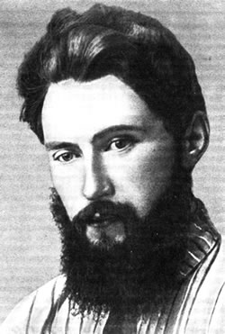

Основатель газеты «Исеть»
Николай Васильевич Здобнов является основателем Шадринской городской газеты «Исеть». Уроженец города шадринск был выдающимся творческим человеком, одним из основателей истории Русской библиографии. В более молодые годы эсеры, занимавшиеся политической деятельностью в качестве членов партии, неоднократно попадали в аресты. А в 1907 году был депортирован из Шадринска на прикованном этапе. Начал заниматься литературной деятельностью по ссылке, сотрудничал с рядом Уральских, петербургских и московских газет и журналов. Во время создания газеты "Шадринск" А. Л. Шанявский учился на социально-историческом факультете Московского Народного университета. Пробная версия газеты "Исеть" была опубликована 21 июля в Шадринске, а первый выпуск-22 августа 1913 года. За первые четыре месяца своего существования "Исети" четыре раза был оштрафован, его редакторы неоднократно арестовывались и задерживались. В мае 1914 года «Исеть» сменил название на" новый Исеть", но это не улучшило его положение. Бесконечные наказания прекратили свое существование. До февраля буржуазно-демократической революции издание газеты "Исеть" вновь продолжалось, после чего в городе появились и другие издания. В 1915 году Н. В. Здобнов был призван в армию, а затем посвятил себя чисто научной и педагогической работе. Основатель нашей газеты скончался в 1942 году, ранее был брошен в Бутырскую тюрьму НКВД.
Наши награды и достижения
1995 год, г. Москва — Диплом победителя конкурса газет «Урал», проходившего в г.Москве с присуждением гранта фонда «Евразия».
1996 год, г. Курган — Почетный Диплом Курганского Союза журналистов за победу в конкурсе на лучшее освещение выборов в Государственную Думу.
1996 год, г. Москва — Диплом лауреата Всероссийского конкурса городских и районных газет на лучшее освещение президентской избирательной кампании.
1998 год, г. Курск — Диплом лауреата конкурса «Вся Россия» третьего фестиваля российской прессы с вручением главного приза фестиваля «Хрустальный соловей».
1998 год, г. Курск — Диплом Всероссийского фестиваля прессы за выпуск литературнокраеведческого приложения «Шадрингородок» и за вклад в популяризацию идей мира и согласия в обществе.
2002 год, г. Екатеринбург — Диплом открытого конкурса журналистской организации «МедиаСоюз» за лучшее освещение Всероссийской переписи населения по Уральскому федеральному округу.
2003 год, г. Екатеринбург — Диплом победителя восьмого Всероссийского фестиваля СМИ «Вся Россия 2003» среди городских и районных газет.
2006 год, г. Екатеринбург — Диплом победителя открытого конкурса на лучшее освещение СМИ УрФО работы по противодействию наркотизации общества.
Светлана Викторовна Eмульянова
(Редактор)
Сергей Павлович Валежанов
(Оператор набора и верстки)
Антон Викторович Петровский
(Оператор набора и верстки)
Стоимость рекламы
Цветной рекламный модуль на первой полосе 25 руб./кв.см
Цветной рекламный модуль на последней полосе 15 руб./кв.см
Черно-белый модуль внутри газеты 10 руб./кв.см
Разработка дизайна рекламного модуля (особой сложности) 3 руб./кв.см
Стоимости рекламных статей
Цветная полоса 20000 руб.
Черно-белая полоса 15 000 руб.
Разворот в цвете 40 000 руб.
Разворот ч/б 30 000 руб.
Стоимость объявлений за 1 строку
Для юридических лиц (24 знака) 15 руб.
Для физических лиц (24 знака) 10 руб.
Рамка объявлений 20 руб.
Адрес редакции: 641870, Россия, Курганская обл., г. Шадринск, ул. Октябрьская, 135.
Тел/факс: 8 (35253) 9-02-45, 9-02-42.
E-mail: gazeta_iset@shadrinsk.net
E-mail: для отправки рекламных макетов reklama-iset@yandex.ru
Copyright © 2021